1. งานขนมเค้กเมืองตรัง
เอกลักษณ์ที่ไม่เหมือนใครของ "เค้กเมืองตรัง" คือ "เค้กมีรู" ตรงกลาง คล้ายโดนัทแต่เนื้อสัมผัสต่างกันอย่างสิ้นเชิง ขนมเค้กเมืองตรังมีต้นกำเนิดมายาวนาน โดยเฉพาะสูตรโบราณจากตำบลลำภูรา
จุดเด่นคือเนื้อเค้กที่นุ่มฟู หอมกรุ่น และไม่ใส่สารกันบูด มีหลากหลายรสชาติให้เลือกสรร ไม่ว่าจะเป็นรสกาแฟ รสใบเตย รสส้ม รสผลไม้รวม และรสสามรส งานขนมเค้กเมืองตรังจัดขึ้นเป็นประจำทุกปีเพื่อส่งเสริมการท่องเที่ยวและประชาสัมพันธ์ของดีเมืองตรัง ให้ผู้มาเยือนได้ลิ้มลองความอร่อยที่สืบทอดมารุ่นต่อรุ่น
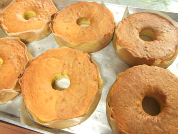
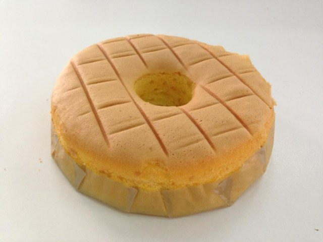
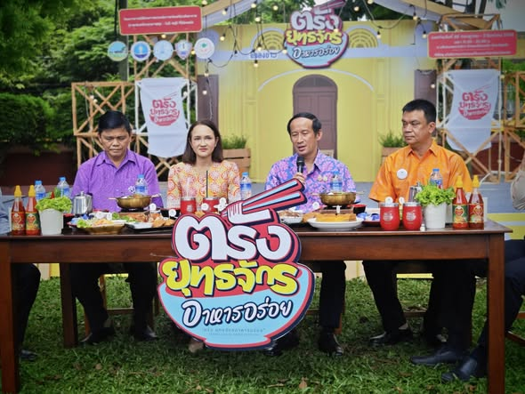
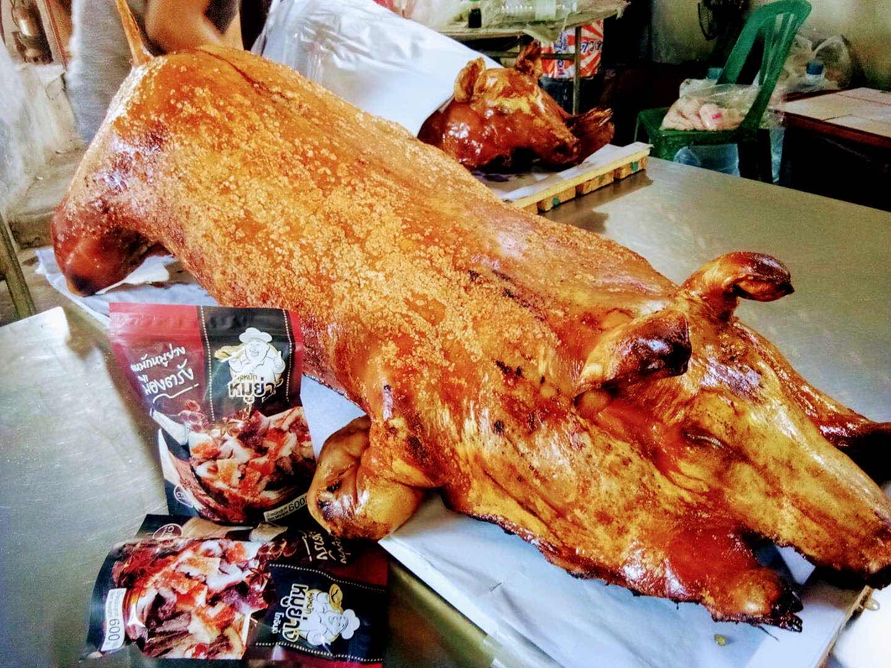
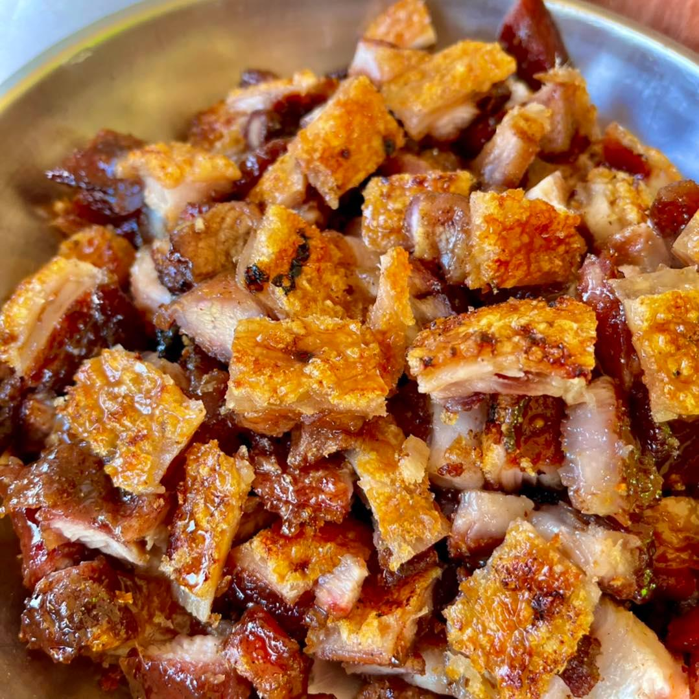
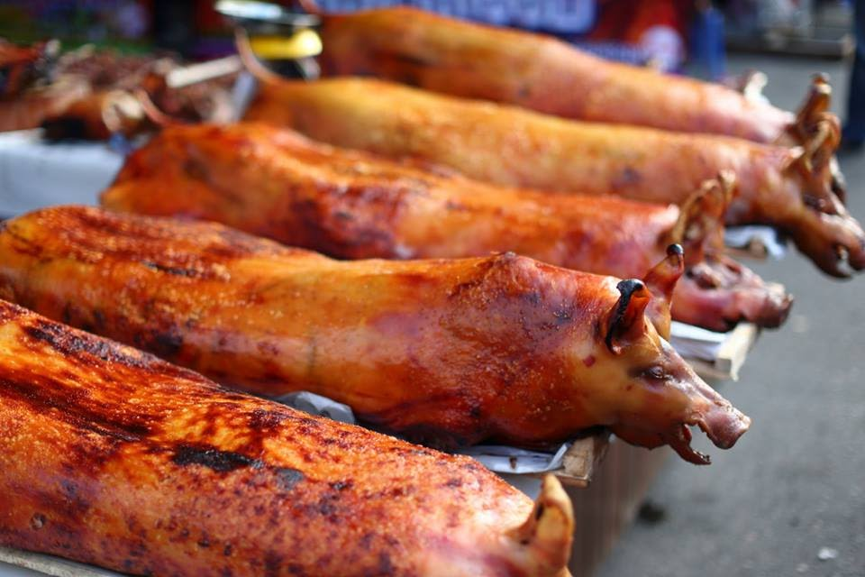
2. หมูย่างเมืองตรัง
ถ้ามาตรังแล้วไม่ได้กินหมูย่าง ถือว่ามาไม่ถึง! "หมูย่างเมืองตรัง" มีชื่อเสียงโด่งดังไปทั่วประเทศ ด้วยเอกลักษณ์เฉพาะตัวคือ "หนังกรอบ เนื้อนุ่ม รสชาติหวานนำเค็มตาม" หมักด้วยเครื่องยาจีนสูตรลับเฉพาะที่สืบทอดกันมากว่า 100 ปี
ชาวตรังนิยมทานหมูย่างเป็นอาหารเช้า คู่กับติ่มซำและกาแฟโบราณ (โกปี๊) ในงานเทศกาลหมูย่าง จะมีการรวบรวมร้านหมูย่างชื่อดังจากทั่วจังหวัดมาประชันความอร่อย ให้คุณได้เลือกชิมความกรอบอร่อยแบบจุใจ กรรมวิธีการย่างด้วยเตาถ่านในโอ่งมังกรทำให้ได้กลิ่นหอมที่เป็นเอกลักษณ์ไม่เหมือนใคร
3. งานวิวาห์ใต้สมุทร (Underwater Wedding)
งานประเพณีที่ได้รับการบันทึกโดย Guinness World Records ว่าเป็นงานวิวาห์ใต้สมุทรที่ใหญ่ที่สุดในโลก จัดขึ้นในช่วงวันวาเลนไทน์ของทุกปี ณ ทะเลตรัง
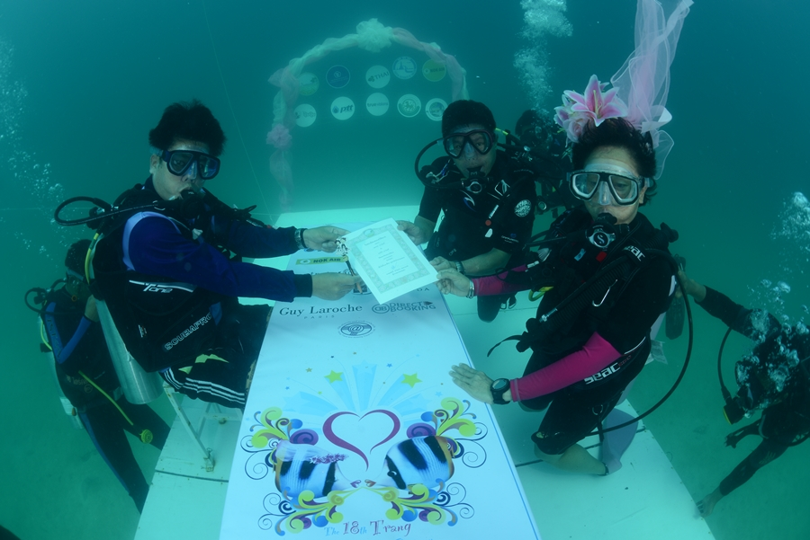
จดทะเบียนสมรสใต้ท้องทะเล ณ เกาะกระดาน
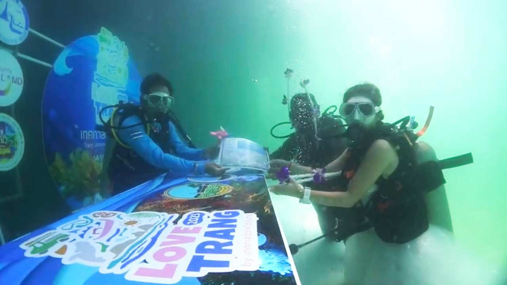
ความรักอันลึกซึ้งดั่งท้องทะเล
คู่บ่าวสาวจากทั่วโลกจะเดินทางมาเพื่อดำน้ำลงไปจดทะเบียนสมรสท่ามกลางฝูงปลาและปะการังอันสวยงาม เป็นสัญลักษณ์ของความรักที่มั่นคง ลึกซึ้ง และสดชื่นเหมือนท้องทะเลอันดามัน นอกจากพิธีใต้น้ำแล้ว ยังมีขบวนแห่ขันหมากทางน้ำและงานเลี้ยงฉลองที่ยิ่งใหญ่ริมหาดปากเมง
4. งานถือศีลกินผัก ตรังบ้านเรา
ประเพณีเก่าแก่ที่ชาวไทยเชื้อสายจีนในจังหวัดตรังปฏิบัติสืบต่อกันมากว่า 100 ปี หรือที่รู้จักกันในนาม "กินเจ" จัดขึ้นเป็นเวลา 9 วัน 9 คืน เพื่อชำระล้างร่างกายและจิตใจให้บริสุทธิ์
ไฮไลท์สำคัญคือ "ขบวนแห่พระออกเที่ยว" (พระออกแห่รอบเมือง) ซึ่งจะมีการประทับทรง หรือ "ม้าทรง" ที่แสดงอิทธิฤทธิ์ปาฏิหาริย์ต่างๆ เช่น การใช้เหล็กแหลมแทงตามร่างกาย เพื่อเป็นการรับเคราะห์แทนผู้ศรัทธา บรรยากาศในเมืองจะเต็มไปด้วยธงสีเหลือง เสียงประทัด และผู้คนที่แต่งกายชุดขาวด้วยแรงศรัทธา
"หนึ่งมื้อกินเจ หมื่นชีวิตรอดตาย" คือคติธรรมสำคัญของงานบุญนี้
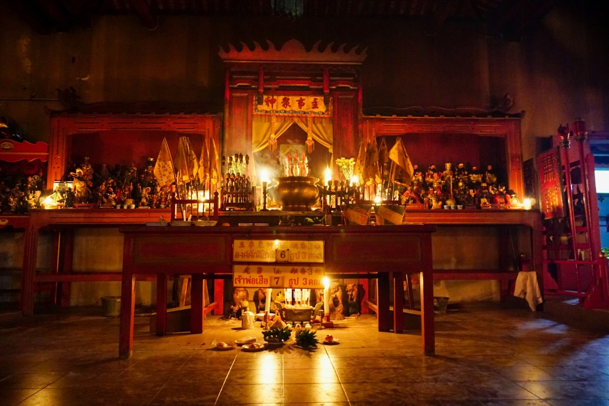
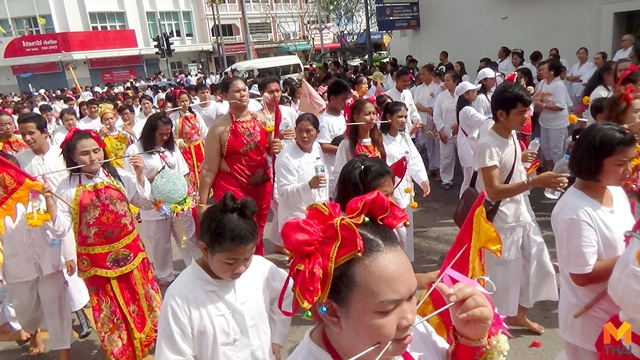
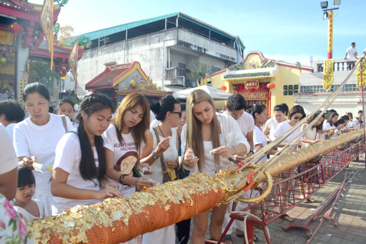
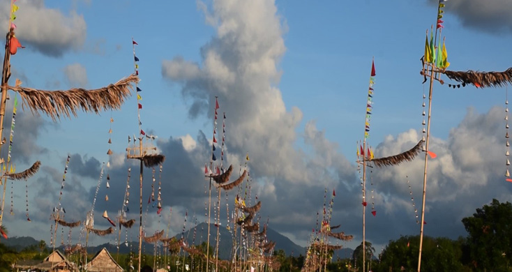
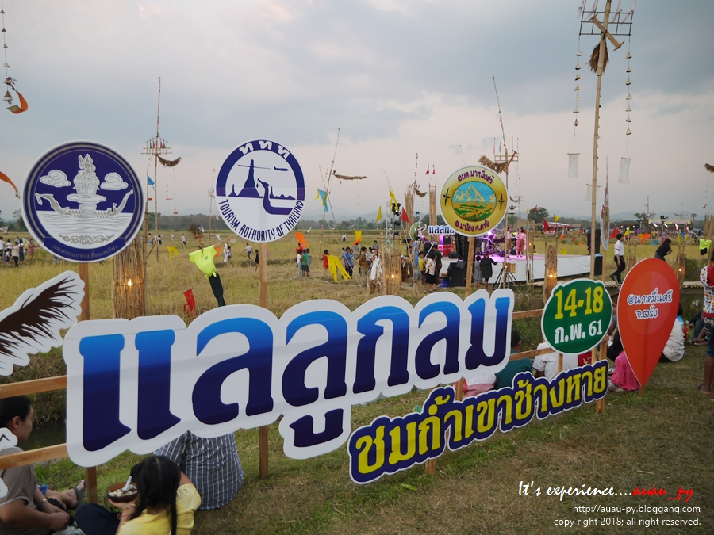
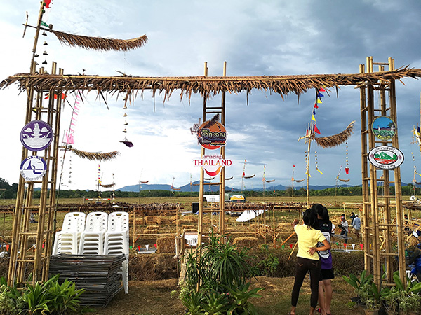
5. งานลูกลม ตรัง
เสียงหวีดหวิวต้องลม เป็นสัญญาณแห่งฤดูกาล "งานลูกลม" เป็นประเพณีพื้นบ้านของชาวนาหมื่นศรี อำเภอนาโยง ลูกลมคือสิ่งประดิษฐ์คล้ายกังหันลมที่ทำจากไม้ไผ่ ติดตั้งไว้ตามคันนา
เดิมทีลูกลมใช้ประโยชน์เพื่อไล่นกกาที่มากินข้าวในนา โดยอาศัยพลังงานลมทำให้เกิดเสียง แต่ปัจจุบันได้พัฒนาเป็นงานศิลปะและการแข่งขันประชันเสียงลูกลมที่ไพเราะและสวยงาม งานนี้สะท้อนถึงวิถีชีวิตความผูกพันระหว่างชาวนากับธรรมชาติ การฟังเสียงลูกลมท่ามกลางทุ่งนาเขียวขจีคือสุนทรียภาพแห่งท้องทุ่งอย่างแท้จริง
6. งานลาซัง
"ลาซัง" หรือ "กินซัง" คือพิธีกรรมอำลาตอซังข้าวหลังเสร็จสิ้นฤดูเก็บเกี่ยว เป็นช่วงเวลาแห่งความสุขและความสามัคคีของชุมชน
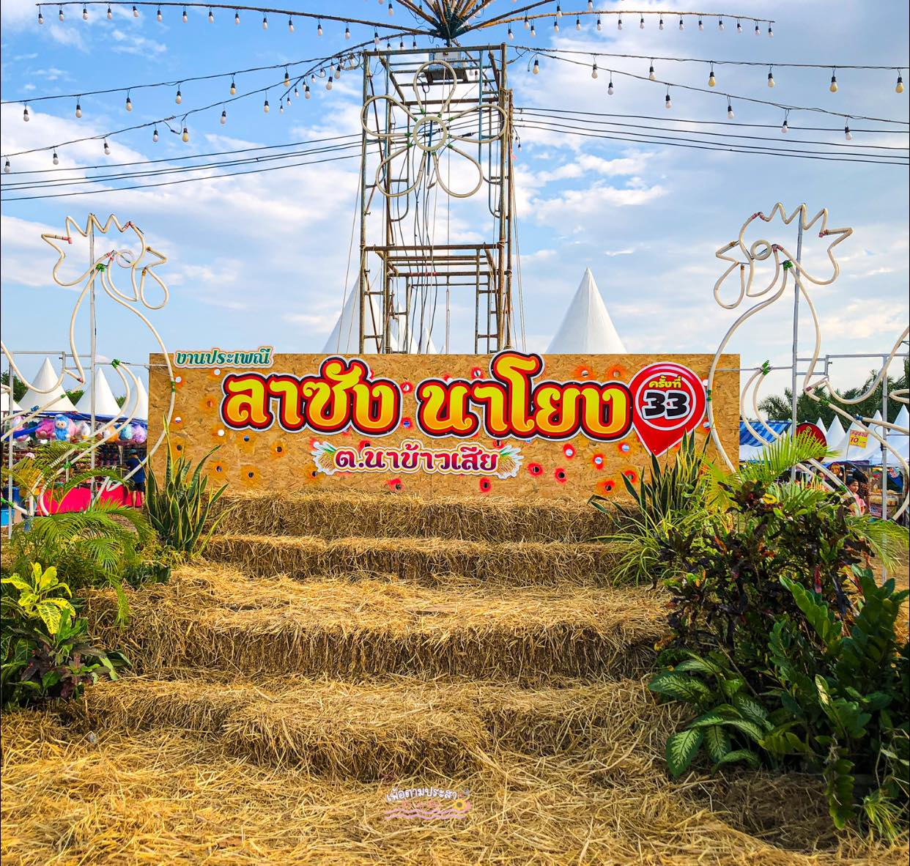
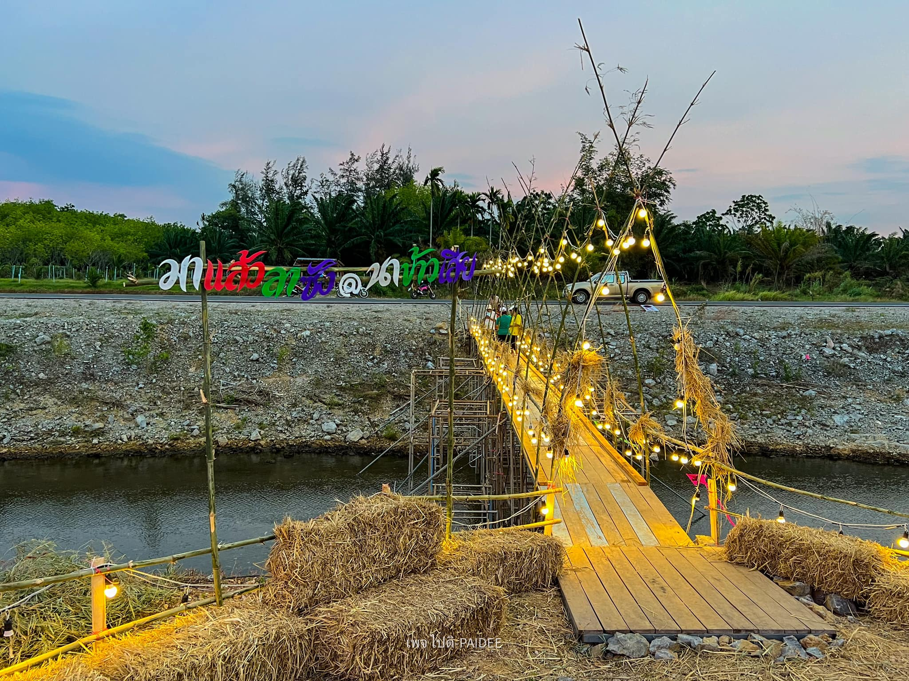
วิถีแห่งท้องทุ่งและการขอบคุณ
งานลาซังมักจัดขึ้นในช่วงเดือนมีนาคม ชาวบ้านจะมารวมตัวกันทำบุญเลี้ยงพระเพื่ออุทิศส่วนกุศลให้แก่บรรพบุรุษและบูชาพระแม่โพสพ ผู้คุ้มครองนาข้าว
กิจกรรมสำคัญคือการละเล่นพื้นบ้าน การแข่งขันกีฬาชนโค หรือชนไก่ และที่ขาดไม่ได้คือการทำขนมพื้นบ้านอย่าง "ขนมเข่ง" และ "ขนมต้ม" เพื่อแจกจ่ายและรับประทานร่วมกัน ถือเป็นการพักผ่อนและกระชับความสัมพันธ์ของคนในชุมชนก่อนจะเริ่มฤดูกาลทำนาครั้งใหม่
- การทำบุญกลางทุ่งนา
- การละเล่นพื้นบ้านภาคใต้
- อาหารพื้นบ้านและขนมจีนน้ำยาปักษ์ใต้
7. ประเพณีสารทเดือนสิบ
งานบุญครั้งใหญ่ของชาวปักษ์ใต้ รวมถึงชาวตรัง เพื่ออุทิศส่วนกุศลให้แก่บรรพบุรุษผู้ล่วงลับ หรือที่เรียกกันว่า "งานชิงเปรต" จัดขึ้นในช่วงเดือน 10 ของทุกปี ถือเป็นการแสดงความกตัญญูที่ลูกหลานมีต่อ "ตายาย" (บรรพบุรุษ)
หัวใจสำคัญคือ "การจัดหมับ" (สำรับอาหาร) ซึ่งประกอบด้วยขนมสัญลักษณ์ 5 อย่างที่มีความหมายลึกซึ้ง ได้แก่ ขนมลา(แทนแพรพรรณเสื้อผ้า), ขนมพอง(แทนแพ/พาหนะ), ขนมบ้า(แทนการละเล่น), ขนมดีซำ(แทนเงินตรา) และ ขนมกง(แทนเครื่องประดับ)
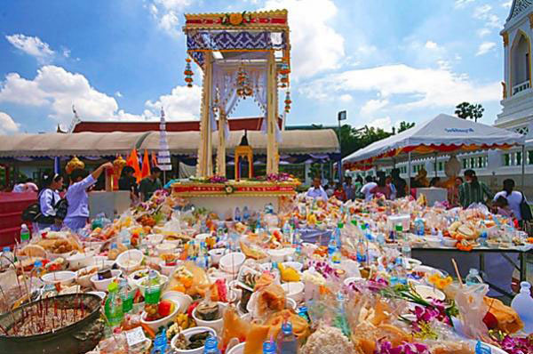
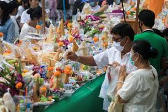
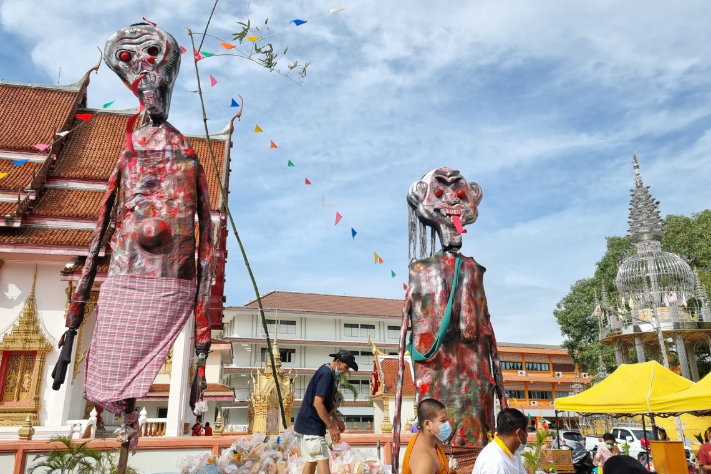
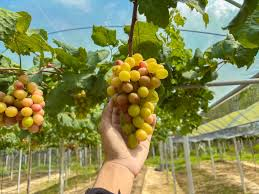
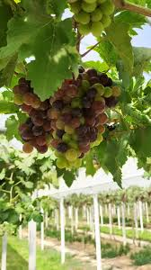
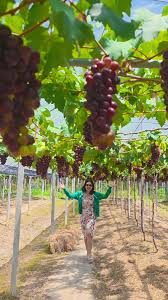
8. สวนองุ่นปากเมง
ใครจะเชื่อว่าเมืองใต้ที่อากาศร้อนชื้นและติดทะเลจะปลูกองุ่นได้! ปัจจุบัน "สวนองุ่นบริเวณหาดปากเมง" กลายเป็นจุดเช็คอินเชิงเกษตรสุดฮิตแห่งใหม่ของเมืองตรัง ที่ลบภาพจำเดิมๆ ทิ้งไปอย่างสิ้นเชิง
นักท่องเที่ยวสามารถเดินชมเถาองุ่นที่ห้อยระย้าสวยงามเรียงรายเป็นซุ้มทางเดิน ตัดพวงองุ่นสดๆ หวานกรอบจากต้นด้วยตัวเอง ไม่ว่าจะเป็นสายพันธุ์แบล็คโอปอล (Black Opal) ที่ไร้เมล็ด หรือสการ์ลอตต้า (Scarlotta) ท่ามกลางบรรยากาศลมทะเลที่พัดเย็นสบาย ถือเป็นการท่องเที่ยวเชิงเกษตรที่ผสมผสานกลิ่นอายทะเลอันดามันได้อย่างลงตัวและน่าทึ่งที่สุด นอกจากนี้ยังมีผลิตภัณฑ์แปรรูปจากองุ่นสดๆ ให้เลือกซื้อเป็นของฝากอีกด้วย
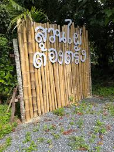
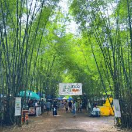
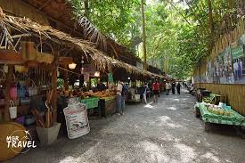
9. หลาดป่าไผ่ (ตลาดต้องไผ่)
สายชิล สายกรีน ต้องไม่พลาด! "หลาดป่าไผ่ หรือ ตลาดชุมชนต้นปาบ" ตลาดนัดวิถีชุมชนที่ตั้งอยู่ท่ามกลางสวนไผ่อันร่มรื่น สัมผัสอากาศบริสุทธิ์และแสงแดดอ่อนๆ ที่ลอดผ่านทิวไผ่ เป็นพื้นที่แห่งความสุขของครอบครัวและนักท่องเที่ยวอย่างแท้จริง
จุดเด่นของตลาดนี้คือความเป็น "Zero Waste / Green Market" พ่อค้าแม่ค้าชุมชนพร้อมใจกันใช้ภาชนะจากธรรมชาติ เช่น กระบอกไม้ไผ่ใส่น้ำดื่ม ใบตองห่อขนม จานกาบหมาก ภายในตลาดอัดแน่นไปด้วยอาหารพื้นเมืองปักษ์ใต้ที่หาทานยาก ขนมโค ขนมปำ ข้าวยำน้ำบูดู ไปจนถึงงานคราฟต์ทำมือ พร้อมกับการแสดงดนตรีพื้นบ้านที่ขับกล่อมตลอดงาน เดินช้อปของกินอร่อยๆ ท่ามกลางร่มไม้ป่าไผ่ ฟินจนลืมเวลาแน่นอน
10. ถ้ำมรกต เกาะมุก
อัญมณีล้ำค่าแห่งท้องทะเลตรัง "ถ้ำมรกต" ตั้งอยู่บนเกาะมุกข์ เป็นสถานที่ท่องเที่ยวที่สร้างความตื่นเต้นและประทับใจระดับโลก ความท้าทายเริ่มต้นขึ้นเมื่อคุณต้องสวมชูชีพและเกาะคอลอยตัวต่อแถวกันเข้าไปในอุโมงค์ถ้ำที่มืดสนิทระยะทางกว่า 80 เมตร
เมื่อพ้นปากถ้ำ คุณจะพบกับความอลังการของลากูน (Lagoon) ลับที่ซ่อนตัวอยู่ใจกลางหุบเขา หาดทรายสีขาวละเอียด น้ำทะเลสีเขียวมรกตใสแจ๋วที่สะท้อนแสงอาทิตย์งดงามราวกับภาพวาด โอบล้อมด้วยหน้าผาสูงชันและพันธุ์ไม้ป่า ในอดีตเล่าขานกันว่าที่นี่เคยเป็นสถานที่ซ่อนสมบัติของโจรสลัด ปัจจุบันคือจุดหมายปลายทางที่นักท่องเที่ยวทั่วโลกต้องมาสัมผัสด้วยตัวเองสักครั้งในชีวิต


11. สถานีรถไฟกันตัง
สุดทางรถไฟสายอันดามัน อาคารไม้รูปทรงปั้นหยาคลาสสิกทาสีเหลืองมัสตาร์ดสลับน้ำตาล โดดเด่นด้วยสถาปัตยกรรมชิโนโปรตุกีสที่สร้างขึ้นตั้งแต่สมัยรัชกาลที่ 6 ภายในยังคงรักษาสภาพเดิมไว้ได้อย่างสมบูรณ์แบบ แวะจิบกาแฟที่ร้าน สถานีรัก (Love Station) และถ่ายรูปชิคๆ กับตัวอาคาร ถือเป็นพิกัดคลาสสิกที่คนรักการถ่ายภาพต้องหลงรัก

12. เกาะกระดาน
ได้รับการจัดอันดับให้เป็น "ชายหาดที่ดีที่สุดในโลก อันดับ 1 ประจำปี 2023" จาก World Beach Guide เกาะกระดานมีหาดทรายขาวเนียนละเอียดราวกับแป้ง น้ำทะเลใสแจ๋วจนมองเห็นแนวปะการังน้ำตื้นและฝูงปลาหลากสีสันได้อย่างชัดเจน บรรยากาศเงียบสงบ เหมาะแก่การพักผ่อน ดำน้ำตื้น และดื่มด่ำกับธรรมชาติบริสุทธิ์ 100%